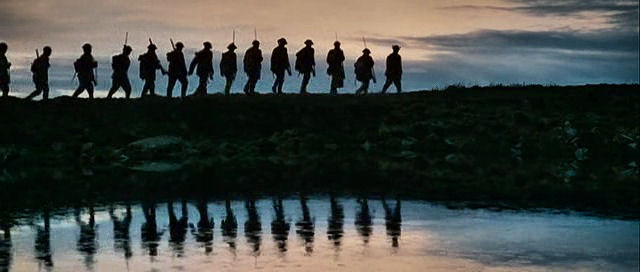
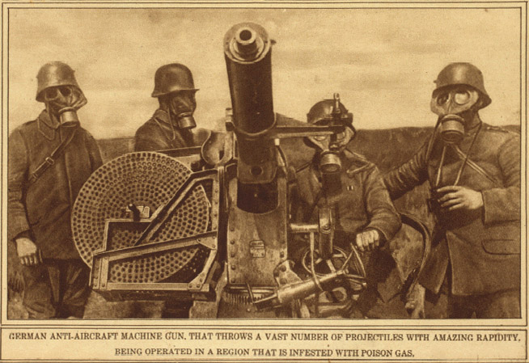

JANUARY The
1st Canadian Heavy Battery is still split into two
sections, in the Vimy area. The firing is generally very
light, as visibility
is very often poor. Guns that have become too worn
are exchanged.
CHARLES'S THIRD HOSPITAL STAY
Charles returns to his unit on
January 6, after his leave in
Bordeaux. On January 29 Charles is admitted to hospital,
suffering from lymphangilis (lymphangitis:
inflammation of the lymph nodes)
He
is treated at No. 22 Canadian General Hospital at Camiers, a
seaside resort near Étaples, in the Pas-de-Calais.
FEBRUARY Nothing
to report during Charles's absence, except that several
inspections take place. Charles returns to his unit on February
13. Early that morning the unit
fires seventy-five gas salvoes to neutralize enemy batteries during a raid by the 3rd Canadian Infantry Brigade.
Then the unit is relieved by the Kent Heavy Battery. The
men move to Gouy Servins for a rest
period.
Daily fatigues, notably in the stables,
inspections, regular training, gunnery and gas-defence
drills, a football match against another
unit, lectures and a Dumbells show for the
officers ... On February 19, a lieutenant of the unit
attends the unveiling of a memorial raised in tribute to
the Canadian artillery on Vimy Ridge.
ON FEBRUARY 28, 1918, CHARLES TURNS 25.
MARCH
The period of rest and training goes on until March
6. The battery then returns to its positions in the
Vimy area; the firing
intensifies every day, reaching more than a thousand
salvoes on March 31. The battery is also shelled; the ammunition
of gun #2 is hit.  APRIL
The firing goes on every day, often heavy, and on
both sides. The unit comes under hostile shelling from 5.9
shells and gas. Under this intense fire there are casualties
and material damage, including guns and ammunition, the
command post and the communication lines. (until
now the NCOs who took turns keeping the unit's
war diary had passed over in silence the shelling the
unit received. But the one writing in 1918 not only
mentions it, he counts the shells and gives the results.) APRIL
The firing goes on every day, often heavy, and on
both sides. The unit comes under hostile shelling from 5.9
shells and gas. Under this intense fire there are casualties
and material damage, including guns and ammunition, the
command post and the communication lines. (until
now the NCOs who took turns keeping the unit's
war diary had passed over in silence the shelling the
unit received. But the one writing in 1918 not only
mentions it, he counts the shells and gives the results.)
MAY
The shelling, given and received, goes on. At times the pace
is hellish: in the last days of May, the
1st Canadian Heavy Battery is in the middle of an area
heavily shelled with mustard gas. The hostile salvoes received
are estimated at five thousand. Thirty-one men are evacuated to
the field ambulance. Three officers and sixteen men are
sent to the horse lines, their eyes and throats
too badly affected. 
On the evening of May 29 the battery is relieved. Early the next morning it sets off for Gouy
Servins. The following day it marches on to the
designated rest bivouac in the Bois de Hazois. The unit
settles in under canvas and the horses are put out to pasture. JUNE
The unit is now attached
to the Canadian Corps reserve, with a month's rest planned.
Twenty-seven NCOs and
men are admitted to hospital with the effects of mustard
gas. The usual fatigues,
instruction, regular training and inspections go on as normal,
as in every rest period. The unit is
beaten in a baseball game against the 5th Canadian Siege
Battery. But on the morning of June 18
orders arrive. The unit must go back into action and take up position at
Nine Elms, south-west of Thelus. CHARLES'S FOURTH
HOSPITAL STAY But
Charles does not go along. On June 18 he is admitted to
field ambulance #1, then at
Orlencourt. The next day Charles is transferred to
field ambulance #3,
at Fresnicourt. Note that these hospitals are really
tents set up behind the front.
Charles
is suffering from mixed influenza. Indeed, an epidemic of "three day fever" strikes
the unit in mid-June. Fifteen men are hospitalized and several others,
excused from duty, are treated within the unit. On June 22, thirty-three men are
hospitalized and even more excused from duty. Short
of men, the battery moves to Nine Elms in two columns, some
of the drivers from the first column being brought back by truck
to move the second. On June 24
Charles leaves hospital and rejoins his unit. A new order arrives to move
three guns south-east of Thelus to fire gas shells,
then bring the guns back to their original position. The mission
is carried out: nearly three hundred salvoes are fired, and the guns are brought back
early in the night of June 25. |